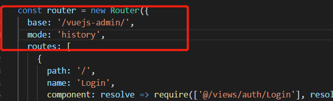
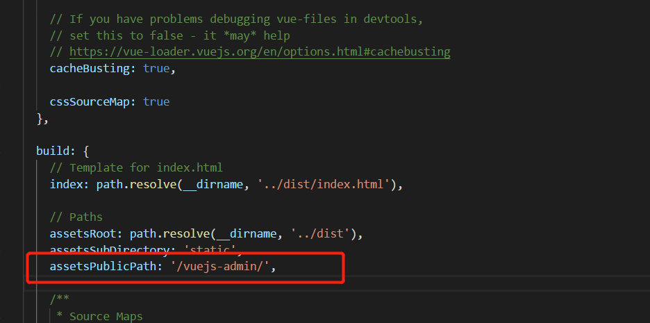
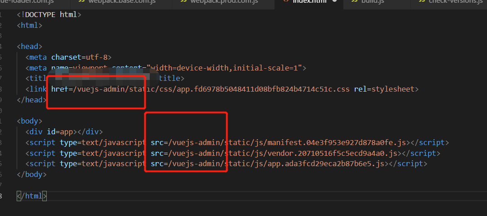

# 解决子目录布署 vue 应用 nginx 访问报 404 的问题
以往部署 vuejs 应用都是直接在 nginx 的 location 为/下直接部署，这次遇到要将 vue 应用部署在/vuejs-admin 的非根下，使用以往部署方案直接访问就会 404，这时修改步骤如下：
- 修改项目 router 配置，如下：

这里一是要修改 router 模式为 history，另一个就是修改 base 地址为要访问的/vuejs-admin 的地址，注意前后都有斜线
- 修改 build 下静态资源路径前缀

同上一部，这里要修改 assetsPublicPath 为/vuejs-admin/地址
- 执行 vuejs 打包：npm run build
确保打包后所有静态资源均是相对地址/vuejs-admin 开头，比如：

- 修改 nginx 配置，使用 rewrite 配置
server {
listen 80;
server_name xxxx.com;
#charset koi8-r;
#access_log logs/host.access.log main;
location /vuejs-admin-server {
proxy_pass http://127.0.0.1:8080/vuejs-admin-server;
}
location ^~/vuejs-admin {
alias /home/server/webapps/vuejs-admin/;
#index index.html;
try_files $uri $uri/ @rewrites;
}
location @rewrites {
rewrite ^/(vuejs-admin)/(.+)$ /$1/index.html last;
}
error_page 500 502 503 504 /50x.html;
location = /50x.html {
root html;
}
}
- 热重载 nginx，搞定收工：nginx -s reload
文章来源：https://www.cnblogs.com/vipzhou/p/9255552.html